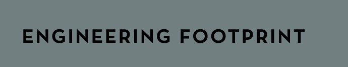

Michiel Kloosterboer, owner of Minahassa Mechanical Equipment, has both designed and overseen the construction of a variety of offshore/heavy lifting equipment installed on vessels in operation all over the world. This section shows a selection of these vessels.
<